ggplot2
ggplot2 is a widely used data visualization package in R that lets you create clear, powerful, and customizable plots using a consistent and logical system called the Grammar of Graphics.
More details: https://ggplot2.tidyverse.org/

Why ggplot2 is so popular:
- Declarative and readable
- Easy to extend and modify
- Produces publication-quality figures
- Works perfectly with tidy data
- Excellent support for statistical graphics
ggplot2 has also an official extension mechanism which means that others can now easily create their own stats, geoms and positions, and provide them in other packages. You can find more information from here:
https://exts.ggplot2.tidyverse.org/ggiraph.html
Please, take a look also to this webpage:
https://github.com/erikgahner/awesome-ggplot2
Core idea: “Grammar of Graphics”
Instead of choosing a plot type (like “bar plot” or “scatter plot”) directly, ggplot2 builds plots by combining components (“layers”):
- Data – what you want to plot
- Aesthetics (aes) – how variables map to visuals (x, y, color, size, …)
- Geoms – what geometric objects to draw (points, lines, bars, …)
- Scales – how values map to colors, sizes, axes
- Facets – splitting plots into panels
- Themes – visual appearance (fonts, background, gridlines)
You add these components together using +.
A simple example
Every ggplot2 plot has three key components:
- data,
- A set of aesthetic mappings between variables in the data and visual properties, and
- At least one layer which describes how to render each observation. Layers are usually created with a geom function.
library(ggplot2)
ggplot(mtcars, aes(x = wt, y = mpg)) +
geom_point()
This produces a scatterplot defined by:
- Data - mtcars
- Aesthetic mapping: engine size mapped to x position (wt), fuel economy to y position (mpg).
- Layer - Geom: points (scatter plot)
Pay attention to the structure of this function call: data and aesthetic mappings are supplied in ggplot(), then layers are added on with +. This is an important pattern, and as you learn more about ggplot2 you’ll construct increasingly sophisticated plots by adding on more types of components.
Almost every plot maps a variable to x and y, so naming these aesthetics is tedious, so the first two unnamed arguments to aes() will be mapped to x and y. This means that the following code is identical to the example above:
ggplot(mpg, aes(displ, hwy)) +
geom_point()Adding more layers
ggplot(mtcars, aes(wt, mpg)) +
geom_point() +
geom_smooth(method = "lm") +
labs(
title = "Fuel efficiency vs car weight",
x = "Weight",
y = "Miles per gallon")
#> `geom_smooth()` using formula = 'y ~ x'
Here you extend the same plot by:
- adding a regression line
- adding labels
Plot geoms
- geom_smooth() fits a smoother to the data and displays the smooth and its standard error.
- geom_boxplot() produces a box-and-whisker plot to summarise the distribution of a set of points.
- geom_histogram() and geom_freqpoly() show the distribution of continuous variables.
- geom_bar() shows the distribution of categorical variables.
- geom_path() and geom_line() draw lines between the data points. A line plot is constrained to produce lines that travel from left to right, while paths can go in any direction. Lines are typically used to explore how things change over time.
Note that different geoms can use the same data and aesthetics! Multiple geoms can be layered like in this example:
ggplot(mpg, aes(displ, hwy)) +
geom_point() +
geom_smooth()
#> `geom_smooth()` using method = 'loess' and formula = 'y ~ x'
#> `geom_smooth()` using method = 'loess' and formula = 'y ~ x'This overlays the scatterplot with a smooth curve, including an assessment of uncertainty in the form of point-wise confidence intervals shown in grey. If you’re not interested in the confidence interval, turn it off with geom_smooth(se = FALSE).
An important argument to geom_smooth() is the method, which allows you to choose which type of model is used to fit the smooth curve:
- method = “loess”, the default for small n, uses a smooth local regression (as described in ?loess). The wiggliness of the line is controlled by the span parameter, which ranges from 0 (exceedingly wiggly) to 1 (not so wiggly).
ggplot(mpg, aes(displ, hwy)) +
geom_point() +
geom_smooth(span = 0.2)
#> `geom_smooth()` using method = 'loess' and formula = 'y ~ x'
#> `geom_smooth()` using method = 'loess' and formula = 'y ~ x'
ggplot(mpg, aes(displ, hwy)) +
geom_point() +
geom_smooth(span = 1)
#> `geom_smooth()` using method = 'loess' and formula = 'y ~ x'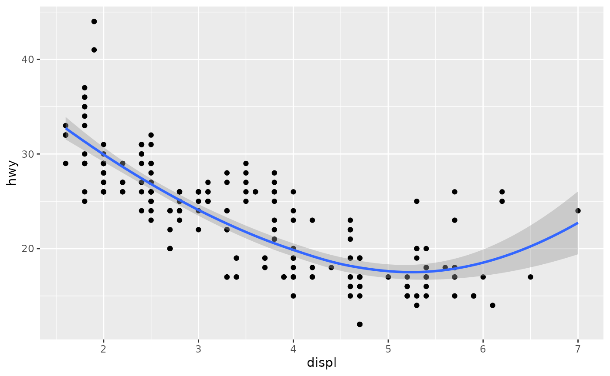
#> `geom_smooth()` using method = 'loess' and formula = 'y ~ x'- method = “gam” fits a generalised additive model provided by the mgcv package. You need to first load mgcv, then use a formula like formula = y ~ s(x) or y ~ s(x, bs = “cs”) (for large data). This is what ggplot2 uses when there are more than 1,000 points.
library(mgcv)
#> Loading required package: nlme
#>
#> Attaching package: 'nlme'
#> The following object is masked from 'package:dplyr':
#>
#> collapse
#> This is mgcv 1.9-4. For overview type '?mgcv'.
ggplot(mpg, aes(displ, hwy)) +
geom_point() +
geom_smooth(method = "gam", formula = y ~ s(x))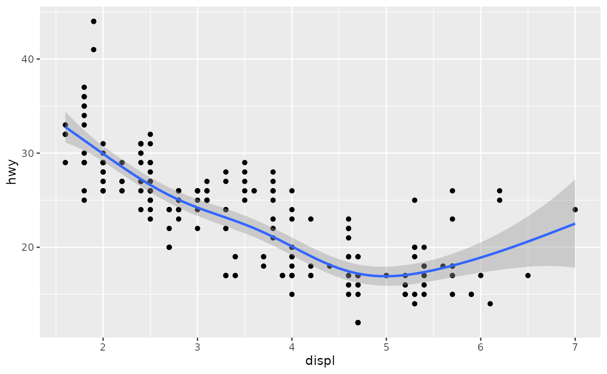
Boxplots and jittered points
When a set of data includes a categorical variable and one or more continuous variables, you will probably be interested to know how the values of the continuous variables vary with the levels of the categorical variable.
There are three useful techniques that help to visualise a categorical variable and one continuous variable:
- Jittering, geom_jitter(), adds a little random noise to the data which can help avoid overplotting.
- Boxplots, geom_boxplot(), summarise the shape of the distribution with a handful of summary statistics.
- Violin plots, geom_violin(), show a compact representation of the “density” of the distribution, highlighting the areas where more points are found.
These are illustrated below:
ggplot(mpg, aes(drv, hwy)) + geom_jitter()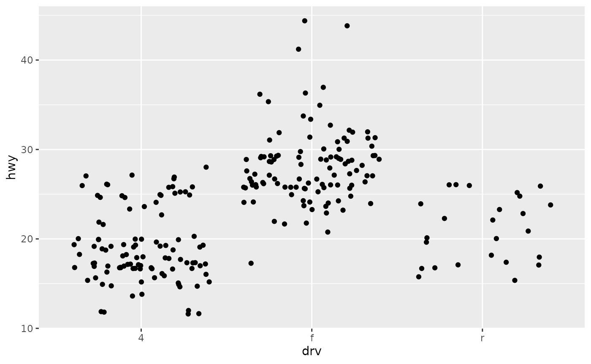
ggplot(mpg, aes(drv, hwy)) + geom_boxplot()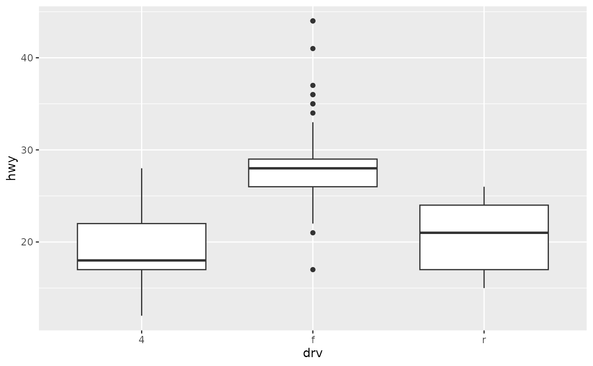
ggplot(mpg, aes(drv, hwy)) + geom_violin()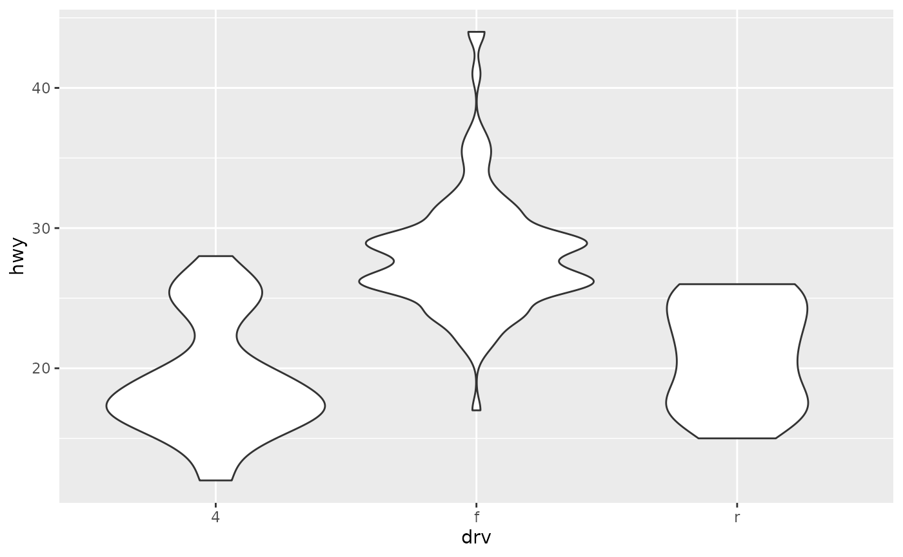
Histograms and frequency polygons
Histograms and frequency polygons show the distribution of a single numeric variable. They provide more information about the distribution of a single group than boxplots do, at the expense of needing more space.
ggplot(mpg, aes(hwy)) + geom_histogram()
#> `stat_bin()` using `bins = 30`. Pick better value `binwidth`.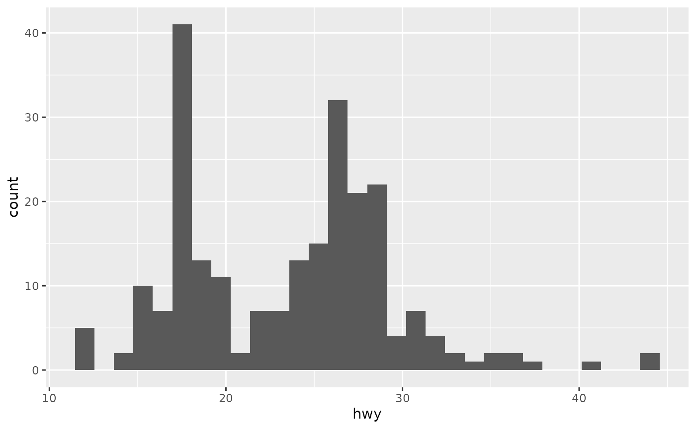
#> `stat_bin()` using `bins = 30`. Pick better value `binwidth`.
ggplot(mpg, aes(hwy)) + geom_freqpoly()
#> `stat_bin()` using `bins = 30`. Pick better value `binwidth`.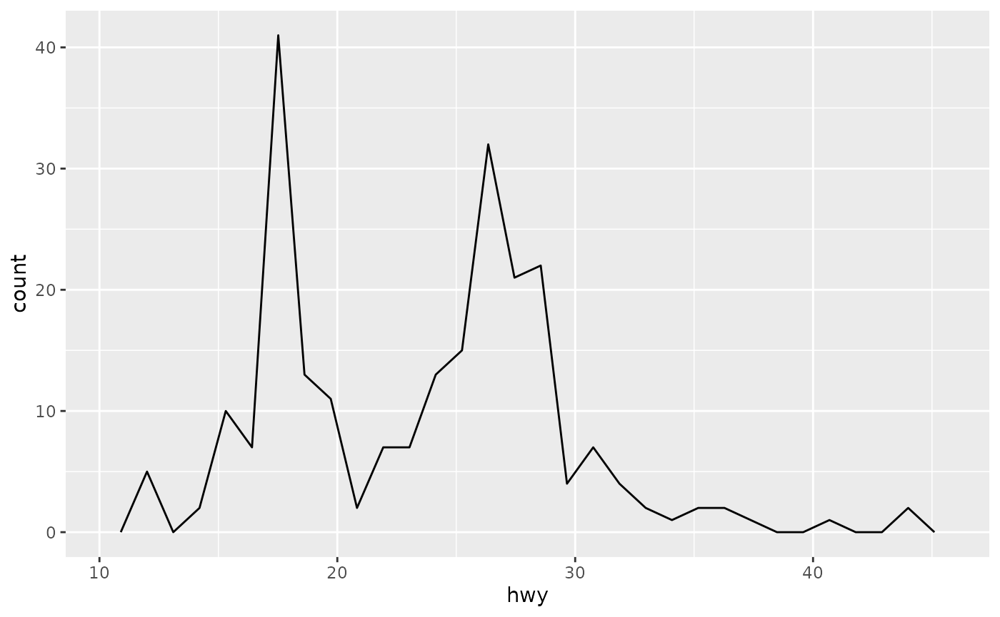
#> `stat_bin()` using `bins = 30`. Pick better value `binwidth`.Both histograms and frequency polygons work in the same way: they bin the data, then count the number of observations in each bin. The only difference is the display: histograms use bars and frequency polygons use lines.
Bar charts
The discrete analogue of the histogram is the bar chart, geom_bar(). It’s easy to use:
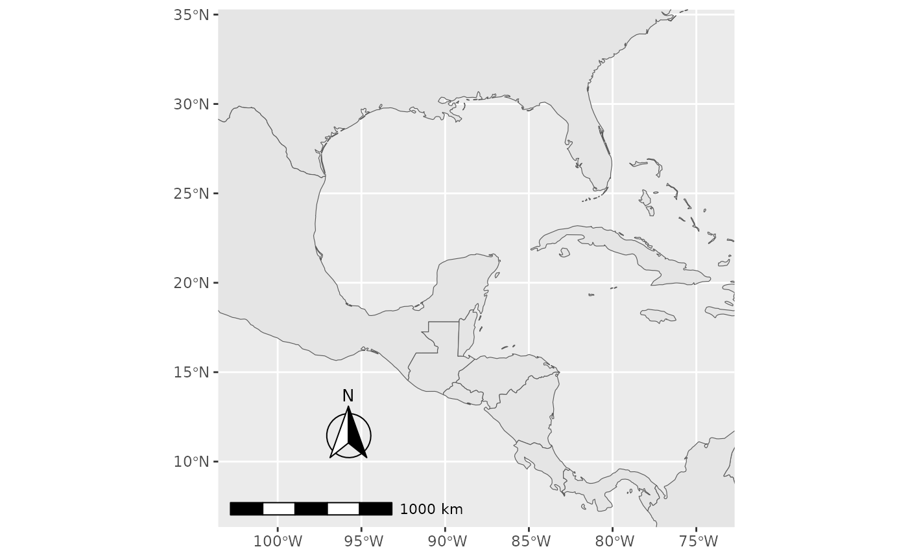
Time series with line
Line and path plots are typically used for time series data. Line plots join the points from left to right, while path plots join them in the order that they appear in the dataset (in other words, a line plot is a path plot of the data sorted by x value). Line plots usually have time on the x-axis, showing how a single variable has changed over time. Path plots show how two variables have simultaneously changed over time, with time encoded in the way that observations are connected.
Because the year variable in the mpg dataset only has two values, we’ll show some time series plots using the economics dataset, which contains economic data on the US measured over the last 40 years.
The figures below shows two plots of unemployment over time, both produced using geom_line(). The first shows the unemployment rate while the second shows the median number of weeks unemployed. We can already see some differences in these two variables, particularly in the last peak, where the unemployment percentage is lower than it was in the preceding peaks, but the length of unemployment is high.
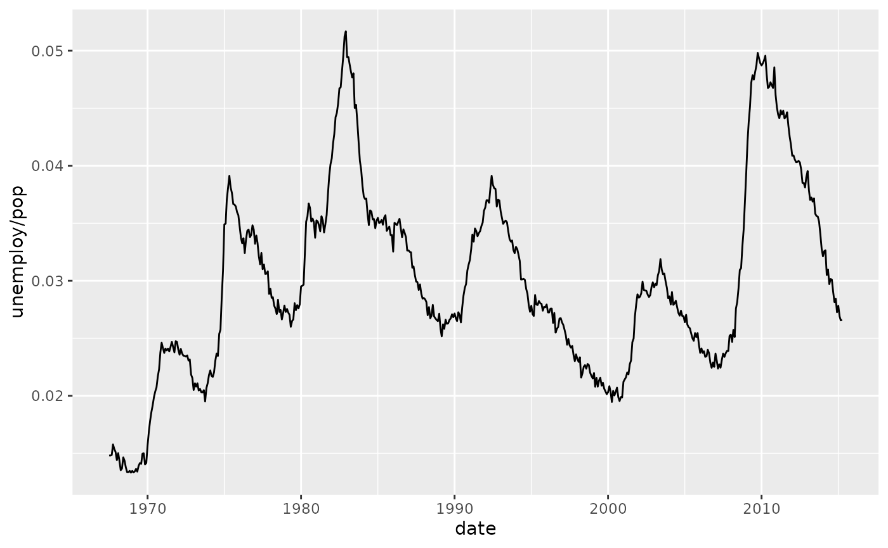
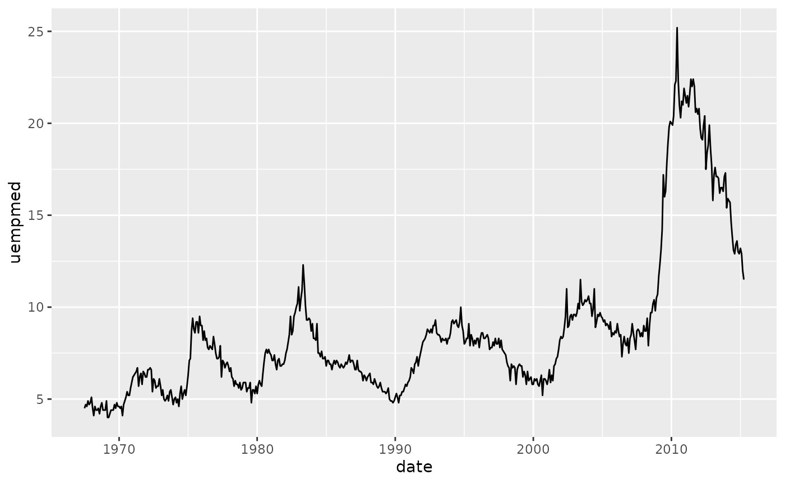
How it differs from base R plots
Base R plotting
- Procedural
- “Draw now, modify later”
- Plot type chosen first (plot, hist, boxplot)
ggplot2
- Declarative
- “Describe what to plot”
- Visualization built from components
Base R:
plot(mtcars$wt, mtcars$mpg)ggplot2:
ggplot(mtcars, aes(wt, mpg)) + geom_point()
ggplot2 is:
- more structured
- more consistent
- easier to build complex plots incrementally
See more information about ggplot2 from this fantastic book: “ggplot2: elegant graphics for data analysis”
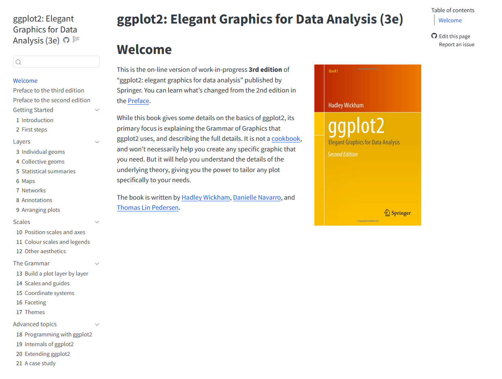
Creating maps with ggplot2
Recently, the package ggplot2 has allowed the use of simple features from the package sf as layers in a graph. The combination of ggplot2 and sf therefore enables to programmatically create maps, using the grammar of graphics, just as informative or visually appealing as traditional GIS software.
Let´s start by loading the basic packages necessary for all maps, i.e. ggplot2 and sf.
library("ggplot2")
library("sf")
#> Linking to GEOS 3.12.1, GDAL 3.8.4, PROJ 9.4.0; sf_use_s2() is TRUEThe package rnaturalearth provides a map of countries of the entire world. Use ne_countries to pull country data and choose the scale (rnaturalearthhires is necessary for scale = “large”). The function can return sp classes (default) or directly sf classes, as defined in the argument return class:
library("rnaturalearth")
library("rnaturalearthdata")
#>
#> Attaching package: 'rnaturalearthdata'
#> The following object is masked from 'package:rnaturalearth':
#>
#> countries110
world <- ne_countries(scale = "medium", returnclass = "sf")
class(world)
#> [1] "sf" "data.frame"Basic plot
First, let us start with creating a base map of the world using ggplot2. This base map will then be extended with different map elements, as well as zoomed in to an area of interest. We can check that the world map was properly retrieved and converted into an sf object, and plot it with ggplot2:
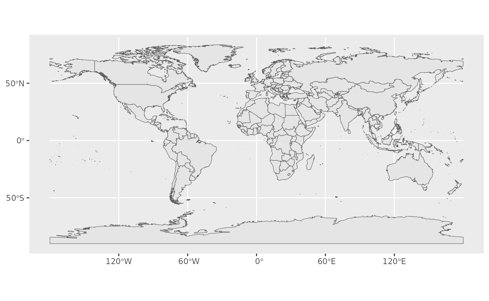
This call nicely introduces the structure of a ggplot call: The first part ggplot(data = world) initiates the ggplot graph, and indicates that the main data is stored in the world object. The line ends up with a + sign, which indicates that the call is not complete yet, and each subsequent line correspond to another layer or scale.
In this case, we use the geom_sf function, which simply adds a geometry stored in a sf object.
Title, subtitle, and axis labels
A title and a subtitle can be added to the map using the function ggtitle, passing any valid character string (e.g. with quotation marks) as arguments. Axis names are absent by default on a map, but can be changed to something more suitable (e.g. “Longitude” and “Latitude”), depending on the map:
ggplot(data = world) +
geom_sf() +
xlab("Longitude") + ylab("Latitude") +
ggtitle("World map", subtitle = paste0("(", length(unique(world$NAME)), " countries)"))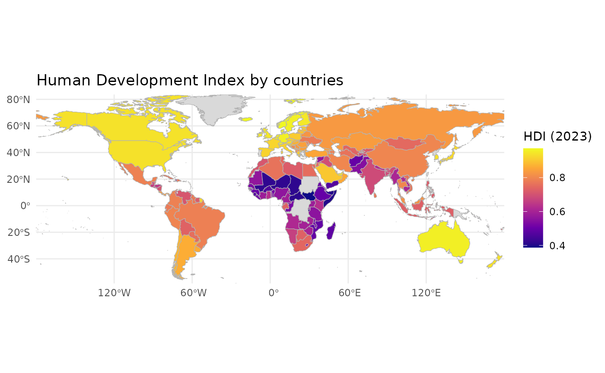
Map color
In many ways, sf geometries are no different than regular geometries, and can be displayed with the same level of control on their attributes. Here is an example with the polygons of the countries filled with a green color (argument fill), using black for the outline of the countries (argument color):
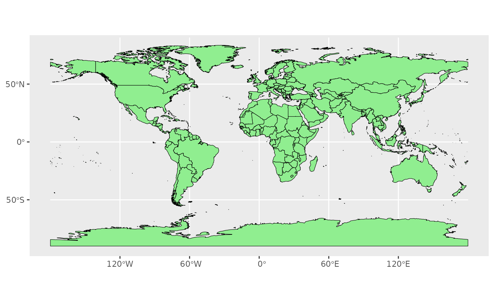
The package ggplot2 allows the use of more complex color schemes, such as a gradient on one variable of the data. Here is another example that shows the population of each country. In this example, we use the “viridis” colorblind-friendly palette for the color gradient (with option = “plasma” for the plasma variant), using the square root of the population (which is stored in the variable POP_EST of the world object):
ggplot(data = world) +
geom_sf(aes(fill = pop_est)) +
scale_fill_viridis_c(option = "plasma", trans = "sqrt")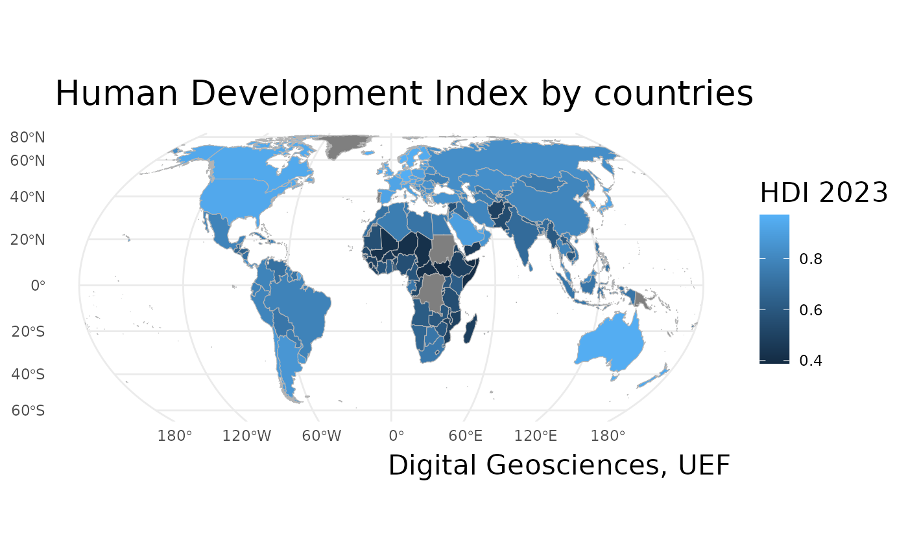
Projection and extent
The function coord_sf allows to deal with the coordinate system, which includes both projection and extent of the map. By default, the map will use the coordinate system of the first layer that defines one (i.e. scanned in the order provided), or if none, fall back on WGS84 (latitude/longitude, the reference system used in GPS). Using the argument crs, it is possible to override this setting, and project on the fly to any projection. This can be achieved using any valid PROJ4 string (here, the European-centric ETRS89 Lambert Azimuthal Equal-Area projection):
ggplot(data = world) +
geom_sf() +
coord_sf(crs = "+proj=laea +lat_0=52 +lon_0=10 +x_0=4321000 +y_0=3210000 +ellps=GRS80 +units=m +no_defs ")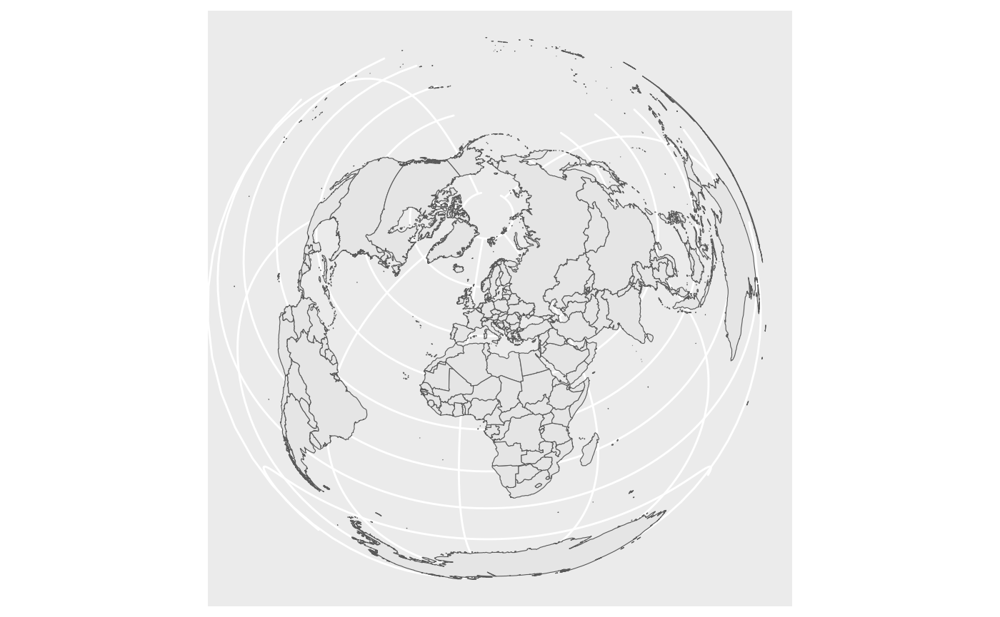
Scale bar and North arrow
Scale bar and north arrow can be added on map with the package ggspatial, which provides easy-to-use functions for this purpose.
library("ggspatial")
ggplot(data = world) +
geom_sf() +
annotation_scale(location = "bl", width_hint = 0.5) +
annotation_north_arrow(location = "bl", which_north = "true",
pad_x = unit(0.75, "in"), pad_y = unit(0.5, "in"),
style = north_arrow_fancy_orienteering) +
coord_sf(xlim = c(-102.15, -74.12), ylim = c(7.65, 33.97))
#> Scale on map varies by more than 10%, scale bar may be inaccurate
These lines add a scale bar:
annotation_scale(location = "bl", width_hint = 0.5) +Arguments explained:
location = “bl”
bottom-left corner of the map
options include “bl”, “br”, “tl”, “tr”
width_hint = 0.5
scale bar will take about half the width of the plot
it is only a hint, not an exact measurement
These lines add a north arrow:
annotation_north_arrow(
location = "bl",
which_north = "true",
pad_x = unit(0.75, "in"),
pad_y = unit(0.5, "in"),
style = north_arrow_fancy_orienteering
) Key parameters:
Position:
location = “bl” - bottom-left
pad_x, pad_y - spacing from plot edges
measured in inches
prevents overlap with the scale bar
Direction:
- which_north = “true”
- arrow points to true north
Style:
style = north_arrow_fancy_orienteering
a decorative, compass-style arrow
ggspatial provides several built-in styles
This part of the code:
coord_sf(
xlim = c(-102.15, -74.12),
ylim = c(7.65, 33.97)
)- Limits the visible map area
- Uses longitude (xlim) and latitude (ylim)
- Does not change the data itself, only what you see
Saving the map
Saving of the map is very easy by using ggsave. This function allows a graphic (typically the last plot displayed) to be saved in a variety of formats, including the most common PNG (raster bitmap) and PDF (vector graphics), with control over the size and resolution of the outcome.
For instance here, we save a PDF version of the map, which keeps the best quality, and a PNG version of it for web purposes:
ggsave("map_web.png", width = 6, height = 6, dpi = "screen")Add another data
Let´s load required packages:
library(spatialcourseOL)
data(HDI_data)
head(HDI_data)The ISO3C code is appended to the HDI_data2 dataset based on the country name. (note that we create here a new dataset HDI_data2)
HDI_data2 <- HDI_data %>%
mutate(iso3 = countrycode(Country, "country.name", "iso3c"))
#> Warning: There was 1 warning in `mutate()`.
#> ℹ In argument: `iso3 = countrycode(Country, "country.name", "iso3c")`.
#> Caused by warning:
#> ! Some values were not matched unambiguously: Micronesia
#> To fix unmatched values, please use the `custom_match` argument. If you think the default matching rules should be improved, please file an issue at https://github.com/vincentarelbundock/countrycode/issuesNext, the world and hdi_country2 datasets are merged by using left_join() function:
joined <- world %>%
left_join(
HDI_data2,
by = c("adm0_iso" = "iso3"))
#> Warning in sf_column %in% names(g): Detected an unexpected many-to-many relationship between `x` and `y`.
#> ℹ Row 193 of `x` matches multiple rows in `y`.
#> ℹ Row 192 of `y` matches multiple rows in `x`.
#> ℹ If a many-to-many relationship is expected, set `relationship =
#> "many-to-many"` to silence this warning.Let´s then make a new map:
ggplot() +
geom_sf(
data = joined,
aes(fill = HDI_2023),
color = "grey70",
linewidth = 0.2) +
scale_fill_viridis_c(
option = "plasma",
na.value = "grey85",
name = "HDI (2023)") +
coord_sf(expand = FALSE) +
labs(title = "Human Development Index by countries") +
theme_minimal()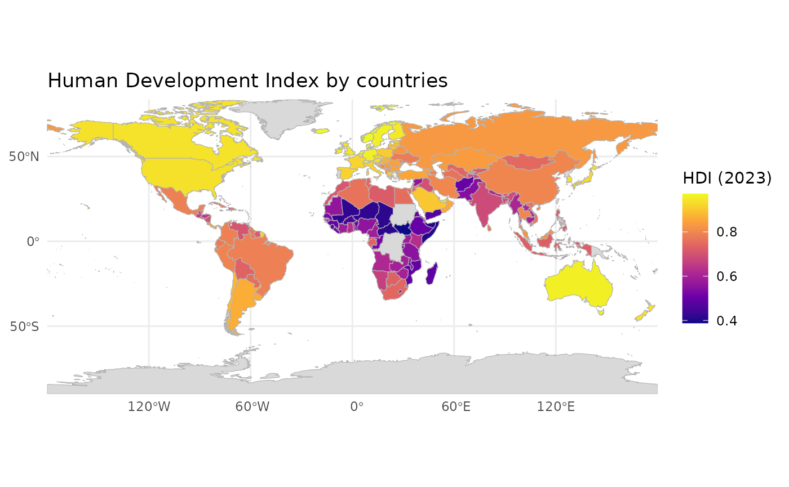
Remove Antarctica and make a new map:
joined2<-joined |> dplyr::filter(continent != "Antarctica")
ggplot() +
geom_sf(
data = joined2,
aes(fill = HDI_2023),
color = "grey70",
linewidth = 0.2) +
scale_fill_viridis_c(
option = "plasma",
na.value = "grey85",
name = "HDI (2023)") +
coord_sf(expand = FALSE) +
labs(title = "Human Development Index by countries") +
theme_minimal() 
The coordinate reference system is improved by adding coord_sf(crs = “+proj=robin”).
ggplot() +
geom_sf(
data = joined,
aes(fill = HDI_2023),
color = "grey70",
linewidth = 0.2
) +
coord_sf(crs = "+proj=eqearth") +
theme_minimal()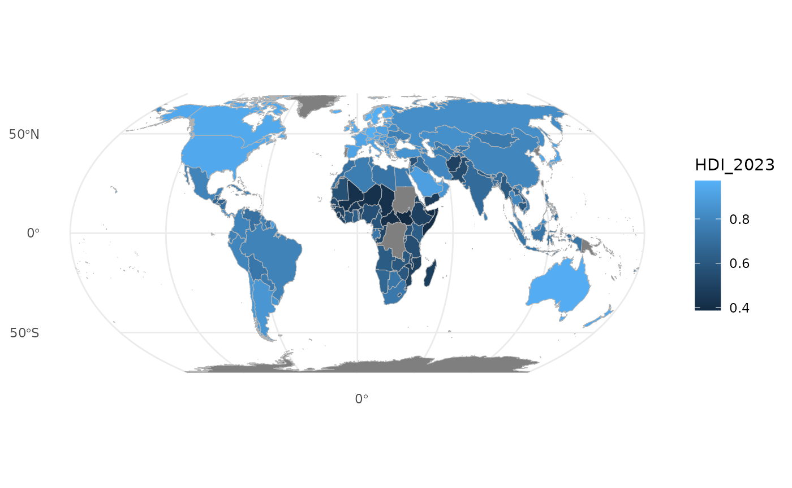
You can also add title and caption:
ggplot() +
geom_sf(
data = joined2,
aes(fill = HDI_2023),
color = "grey70",
linewidth = 0.2
) +
coord_sf(crs = "+proj=eqearth") +
theme_minimal() + labs(title = "Human Development Index by countries") +
labs(fill = "HDI 2023") +
labs(caption="Digital Geosciences, UEF") +
theme(legend.title = element_text(size=16)) + theme(plot.title = element_text(size = 20))+
theme(plot.caption = element_text(size=16) )
Working with ggplot2: Population development of the municipality categories
These notes explain an R script that produces a faceted bar chart describing population development across different municipality categories in Finland.
data(pop_category)Explanation:
data() loads a dataset that is already available in the R environment or from a loaded package.
pop_category contains longitudinal population data, structured by:
Year
Municipality category
Population change components (e.g. natural change, migration)
This dataset is in long-format and will be the foundation for the visualization.
group.labs <- c("Sparsely populate", "Urban", "Rural close to urban", "Core rural")
names(group.labs) <- c("Harvaan asuttu maaseutu","Kaupungit","Kaupunkien läh. maaseutu", "Ydinmaaseutu")Explanation:
- This code creates a named character vector for relabeling factor levels.
- The names correspond to original category labels in the data (Finnish).
- The values are English translations used in the plot.
- This vector will later be passed to labeller() to improve readability in facet titles.
Next, we will draw a plot visualising population development in Finnish municipality categories.
plot1<-ggplot(pop_category, aes(Year, weight=value, fill=Variable))+
geom_bar(binwidth=1, color="gray", size=0.25) +
facet_wrap(~Category, scales = "free_y", ncol = 2, labeller = labeller(Category=group.labs)) +
theme_minimal() +
scale_fill_tableau("Tableau 20", labels=c("Natural population change","Net immigration","Net migration")) +
theme(legend.position = "bottom") + guides(col=guide_legend(ncol=2))+
theme(axis.text.x = element_text(color = "grey20", size = 10, angle = 90, hjust = .5, vjust = .5, face = "plain"),
axis.text.y = element_text(color = "grey20", size = 12, angle = 0, hjust = 1, vjust = 0, face = "plain"),
axis.title.x = element_text(color = "grey20", size = 12, angle = 0, hjust = .5, vjust = 0, face = "plain"),
axis.title.y = element_text(color = "grey20", size = 12, angle = 90, hjust = .5, vjust = .5, face = "plain"),
strip.text = element_text(size = 14)) +
theme(legend.text=element_text(size=14)) +
labs(fill="Population development")+
labs(title="Population development in municipality categories",
x="Year", y="Change, person",
caption="Data: Statistics Finland 2023") +
scale_x_continuous(breaks = seq(1993,2022,1))+
theme(legend.title = element_text(size=14)) + theme(plot.title = element_text(size = 16))
#> Warning in geom_bar(binwidth = 1, color = "gray", size = 0.25): Ignoring
#> unknown parameters: `binwidth` and `size`Let’s call plot1 object to see the plot we just created:
plot1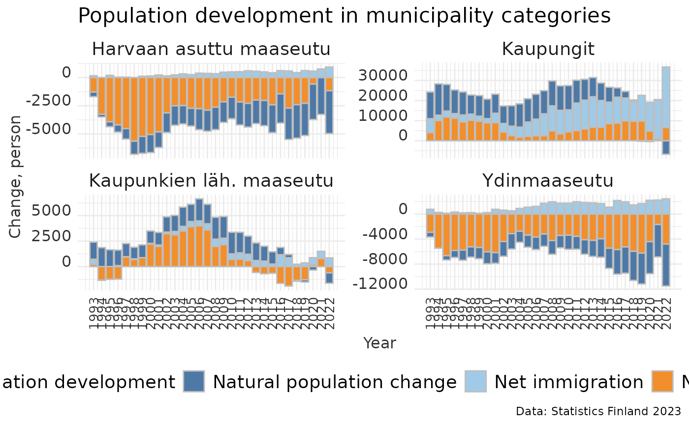
Step by step explanation of the ggplot object
1. Initializing the ggplot object
plot1 <- ggplot(pop_category,
aes(Year, weight = value, fill = Variable))Explanation:
ggplot() initializes a plotting object using pop_category as the data source.
Aesthetic mappings:
Year - x-axis
value - bar height (via weight)
Variable - fill color (different population components)
Using weight=value allows us to stack contributions within each year.
2. Creating stacked bar charts
geom_bar(binwidth = 1, color = "gray", size = 0.25)Explanation:
- geom_bar() creates bar charts using the count/statistic logic.
- binwidth = 1 ensures one bar per year.
- Bars are stacked automatically because a fill aesthetic is defined.
- A light gray border improves visual separation between stacked components.
3. Faceting by municipality category
facet_wrap(~Category,
scales = "free_y",
ncol = 2,
labeller = labeller(Category = group.labs))Explanation:
- facet_wrap() creates one subplot for each municipality category.
- scales = “free_y” allows each panel to have its own y-axis range.
- ncol = 2 arranges the panels into two columns.
- labeller() applies the English labels defined earlier.
4. Base theme and color palette
theme_minimal() +
scale_fill_tableau("Tableau 20",
labels = c("Natural population change",
"Net immigration",
"Net migration"))Explanation:
- theme_minimal() provides a clean, distraction-free look.
- scale_fill_tableau() applies a professional color palette.
- Custom labels clarify what each stacked bar segment represents.
5. Legend positioning and layout
theme(legend.position = "bottom") +
guides(col = guide_legend(ncol = 2))Explanation:
- Moves the legend to the bottom to improve balance.
- Splits the legend items into two columns for compactness.
6. Customizing axis text and titles
theme(
axis.text.x = element_text(angle = 90, size = 10),
axis.text.y = element_text(size = 12),
axis.title.x = element_text(size = 12),
axis.title.y = element_text(size = 12),
strip.text = element_text(size = 14))Explanation:
- X-axis labels are rotated vertically to avoid overlap.
- Font sizes are increased for lecture or presentation use.
- Facet strip titles are emphasized for easy comparison.
7. Legend and title styling
theme(legend.text = element_text(size = 14)) +
theme(legend.title = element_text(size = 14)) +
theme(plot.title = element_text(size = 16))Explanation:
- Improves readability of legend text.
- Makes the plot title more prominent.
8. Adding labels and annotations
labs(fill = "Population development",
title = "Population development in municipality categories",
x = "Year",
y = "Change, person",
caption = "Data: Statistics Finland 2023")Explanation
Labels clarify:
What the colors mean
What is shown on each axis
The caption documents the data source, which is essential in academic work.
9. Customizing the x-axis scale
scale_x_continuous(breaks = seq(1993, 2022, 1))Explanation:
- Explicitly defines year breaks from 1993 to 2022.
- Ensures no years are skipped or aggregated unintentionally.
Adding a simple map to the plot
Load packages used in this example:
Let’s load data from different regional divisions.
Let’s download a municipality data set with geofi package:
municipalities <- geofi::get_municipalities(year = 2021)
#> Requesting response from: https://geo.stat.fi/geoserver/wfs?service=WFS&version=1.0.0&request=getFeature&typename=tilastointialueet%3Akunta4500k_2021
#> Warning: Coercing CRS to epsg:3067 (ETRS89 / TM35FIN)
#>
#> geofi R package: tools for open GIS data for Finland.
#> Part of rOpenGov <ropengov.org>.
#> Version 1.2.1
#> Data is licensed under: Attribution 4.0 International (CC BY 4.0)
municipalities <- municipalities %>%
select(kunta, kunta_name)Next we will join data sets with function right_join because it maintains the class of municipality as sf.
muni <- dplyr::right_join(x = municipalities, y = aluejaot2, by=c("kunta" = "tunnus"))Let’s define colors for plots:
red<-"#F8766D"
green <- "#00BA38"
blue <- "#619CFF"
purple <- "#C77CFF"
blue_gray <- "#464a62"
mid_gray <- "#ccd0dd"
light_gray <- "#f9f9fd"and set some global theme defaults
theme_set(theme_minimal())
theme_update(text = element_text(family = "sans", color = "#464a62"))
theme_update(plot.title = element_text(hjust = 0.5, face = "bold"))
theme_update(plot.subtitle = element_text(hjust = 0.5))Finally we are able to draw a map by using ggplot:
map<-ggplot(muni) +
geom_sf(aes(fill = Alueluokka_eng), color = light_gray, lwd = 0.08) +
scale_fill_manual(values = c(red, green, blue, purple), name = "", guide = guide_legend(direction = "horizontal", label.position = "top", keywidth = 3, keyheight = 0.5)) +
labs(title = "", color="black") +
theme(panel.grid.major = element_blank(),
panel.grid.minor = element_blank(),
axis.text = element_blank(),
axis.title = element_blank(),
legend.position = c(0.25,0.60))+
guides(fill=guide_legend(nrow=4, byrow=T)) +
theme(legend.text=element_text(size=11)) +
theme(plot.margin=margin(0,0,0,0,"cm")) Working with ggplot2: Population development of the municipalities
1. Installing and loading R packages
What is an R package? An R package is a collection of functions, datasets, and documentation that extends what R can do. Base R is fairly minimal; most real data analysis uses packages.
Loading commonly used packages
library(forecast)
#>
#> Attaching package: 'forecast'
#> The following object is masked from 'package:nlme':
#>
#> getResponse
library(foreign)
library(reshape2)
library(ggplot2)
library(zoo)
#>
#> Attaching package: 'zoo'
#> The following objects are masked from 'package:base':
#>
#> as.Date, as.Date.numeric
library(scales)
library(dplyr)
library(ggthemes)Installing and loading additional packages
install.packages("geofacet")geofacet is used for geographical faceting (e.g. small multiples laid out like a map).
Explanation:
- install.packages() downloads the package from CRAN
- You only need to install a package once
- library() must be run every session
Installing a package from GitHub
remotes::install_github("ropengov/geofi")Explanation:
- Some packages are not on CRAN
- install_github() installs directly from GitHub
- geofi provides Finnish municipality and regional data
Note! This requires the remotes package to be installed.
2. Reading data into R
Reading datasets:
Explanation:
- read.csv() loads a CSV file into R as a data frame
- sep = “,” specifies comma‑separated values
- encoding = “UTF-8” ensures correct character encoding (important for Finnish characters)
- stringsAsFactors = FALSE keeps text variables as character strings
- names(dat) shows column names of the dat object
Reading a second dataset
3. Merging datasets
x2 <- merge(data_vakie3, aluejaot2, by.x="tunnus", by.y="tunnus",all.x=T)Explanation:
- merge() combines two datasets
- by.x and by.y specify the id variable which is found from both of datasets (here id is tunnus)
- all.x = TRUE keeps all rows from data (left join)
4. Reshaping the data (wide → long)
Many datasets are initially in wide format:

melt():
- Keeps identifier variables (id.vars)
- Converts columns 3–43 into: a variable column and a value column
As a results, data2 is suitable for ggplot2 and time‑series analysis.
5. Creating a time variable
aika <- seq(2000,2040,1)
aika
#> [1] 2000 2001 2002 2003 2004 2005 2006 2007 2008 2009 2010 2011 2012 2013 2014
#> [16] 2015 2016 2017 2018 2019 2020 2021 2022 2023 2024 2025 2026 2027 2028 2029
#> [31] 2030 2031 2032 2033 2034 2035 2036 2037 2038 2039 2040Explanation:
- seq() creates a sequence of numbers
- Here: years from 2000 to 2040
- Step size = 1 year
This vector can be used as:
- A time axis
- A reference for plotting
- Indexing years
6. Creating a repeated time variable
b <- rep(aika,310)Explanation:
- aika is a vector of years (2000–2040)
- rep() repeats this vector 310 times
- The result is a long vector where the time sequence is repeated for each spatial unit (e.g. municipality or region)
Why this is needed?
After reshaping the data into long format, we need a time variable that matches the number of rows in the dataset.
Conceptually:
- Each region has values for every year
- b assigns the correct year to each observation
7. Sorting the data by region name
data3 <- data2[order(data2$nimi),]Explanation:
- order(data2$nimi) sorts rows alphabetically by region name (nimi)
- The brackets [ , ] reorder the rows accordingly
Why this matters?
- Ensures that time series are properly aligned
- Matches the structure of the repeated time vector (b)
- Prevents mismatch between years and regions
This step is crucial for correct time–region alignment.
8. Adding the time variable to the data
Explanation:
- cbind() binds a new column to the dataset
- The new column b represents time (years)
- names(data4) checks that the column was added correctly
9. Converting values to numeric
data4$value <- as.numeric(data4$value)Explanation:
- After melt(), values are often stored as characters
- as.numeric() converts them into numeric values
Why this is important?
- Mathematical operations (sum, mean, plots) require numeric data
- Without this step, aggregation would fail or give errors
10. Aggregating data by year, region, and province
Explanation: This step summarizes the data.
aggregate() groups observations
Grouping variables:
data4$b → year
data4$nimi → region
data4$Maakunta → province
FUN = sum → sums values within each group
Conceptually: This produces one value per year per region, suitable for:
- time‑series analysis
- plotting trends
- regional comparisons
The output columns will be named:
- Group.1 → year
- Group.2 → region name
- Group.3 → province
- x → aggregated value
11. Checking dataset dimensions
dim(data5)
#> [1] 12669 4Explanation:
dim() reports:
- number of rows
- number of columns
Why this matters?
- Confirms that aggregation worked as expected
- Useful for sanity checking before analysis or plotting
12. Subsetting one province
vs <- subset(data5, Group.3=="Pohjois-Karjala")Explanation:
- subset() filters the data
- Keeps only rows where the province is Pohjois‑Karjala
Result: vs contains only regional time series for North Karelia
Ready for:
- regional plots
- comparisons
- focused analysis
13. Visualising regional population development with ggplot2
Facetting
Faceting means splitting one plot into multiple small plots, each showing a subset of the data, but:
- using the same variables
- the same geoms
- the same aesthetics
Think of it as: “Draw the same plot many times, once for each group.”
This is extremely useful when you want to:
- compare groups
- see patterns that would be hidden if everything were overlaid
- teach students how trends differ across categories
In ggplot2, the two main faceting functions are:
- facet_wrap() - One grouping variable
- facet_grid() - Two grouping variables (rows × columns)
14. What is faceting in ggplot2?
Faceting means splitting one plot into multiple small plots, each showing a subset of the data, but:
- using the same variables
- the same geoms
- the same aesthetics
ggplot(vs, aes(x=Group.1, y=x))+
geom_line(linewidth=1) +
theme(axis.text.x=element_text(angle=90, vjust=0.5,hjust=1)) +
facet_wrap(facets = ~Group.2, scales = "free_y") 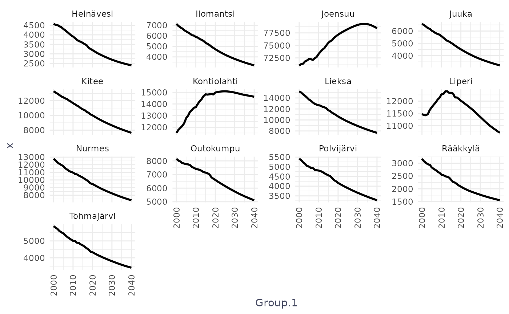
Above code, explained line by line:
ggplot(vs, aes(x = Group.1, y = x)) +This initializes the plot
- vs is your data frame
- Group.1 - x-axis (likely year)
- x - y-axis (population or similar variable)
geom_line(linewidth = 1) +Draws a line in each panel
- geom_line() connects points in order of x
- linewidth = 1 makes the line thicker and more readable
theme(axis.text.x = element_text(angle = 90, vjust = 0.5, hjust = 1)) +Rotates x-axis labels
- angle = 90 → vertical labels
- vjust, hjust → alignment adjustments
This is common when x-axis labels are long or many (e.g. years).
facet_wrap(facets = ~Group.2, scales = "free_y")This is the key faceting line and it tells ggplot:
“Create one panel for each unique value of Group.2.”
If Group.2 contains municipalities, you get:
- one panel per municipality
If it contains regions or categories:
- one panel per region/category
Internally, ggplot:
- Splits the data by Group.2
- Draws the same plot for each subset
- Arranges the panels automatically in rows and columns
scales = “free_y” — very important:
- Each facet gets its own y-axis scale
- Makes small and large groups equally visible
- Improves readability and comparison of shape (trends)
Basically, the code draws a separate line plot for each value of Group.2, arranged automatically on the page, with each plot showing how x changes over Group.1 and using its own y-axis scale.
15. facet_geo()
Standard faceting (facet_wrap(), facet_grid()) arranges panels
- alphabetically
- or in rows/columns you choose
This means that “geography” is lost. For example, municipalities in Finland would appear in an arbitrary order, not reflecting where they are located.
Function facet_geo() keeps geography visible while still showing one plot per region.
What is facet_geo()?
In simple terms:
- Each facet = one region, positioned to roughly match its real-world map location
So instead of this:
Helsinki | Espoo | Tampere
Turku | Oulu | Kuopioyou get something like:
Oulu
Kuopio Jyväskylä
Turku HelsinkiHow geo_facet works conceptually
You provide two things:
Your data
- Includes a region variable (e.g. municipality)
A geographic grid: A lookup table with:
- region name
- row
- column
Example of a grid (simplified):
grid_finland <- data.frame(
municipality = c("Helsinki", "Turku", "Oulu"),
row = c(3, 4, 1),
col = c(3, 2, 3)
)This grid tells facet_geo() where each panel should go.
Predefined grids for Finland are available in the geofi package:
https://ropengov.github.io/geofi/articles/geofi_datasets.html
d <- data(package = "geofi")
as_tibble(d$results) |>
select(Item,Title) |>
filter(grepl("grid", Item)) |>
print(n = 100)
#> # A tibble: 22 × 2
#> Item Title
#> <chr> <chr>
#> 1 grid_ahvenanmaa custom geofacet grid for Ahvenanmaa region
#> 2 grid_etela_karjala custom geofacet grid for Etelä-Karjala region as in 2…
#> 3 grid_etela_pohjanmaa custom geofacet grid for Etelä-Pohjanmaa
#> 4 grid_etela_savo custom geofacet grid for Etelä-Savo
#> 5 grid_hyvinvointialue custom geofacet grid for Wellbeing services counties
#> 6 grid_kainuu custom geofacet grid for Kainuu region
#> 7 grid_kanta_hame custom geofacet grid for Kanta-Häme region
#> 8 grid_keski_pohjanmaa custom geofacet grid for Keski-Pohjanmaa region
#> 9 grid_keski_suomi custom geofacet grid for Keski-Suomi region as in 2020
#> 10 grid_kymenlaakso custom geofacet grid for Kymenlaakso region
#> 11 grid_lappi custom geofacet grid for Lappi region as in 2020
#> 12 grid_maakunta custom geofacet grid for regions
#> 13 grid_paijat_hame custom geofacet grid for Päijät-Häme region
#> 14 grid_pirkanmaa custom geofacet grid for Pirkanmaa region
#> 15 grid_pohjanmaa custom geofacet grid for Pohjanmaa region
#> 16 grid_pohjois_karjala custom geofacet grid for Pohjois-Karjala region
#> 17 grid_pohjois_pohjanmaa custom geofacet grid for Pohjois-Pohjanmaa region
#> 18 grid_pohjois_savo custom geofacet grid for Pohjois-Savo region
#> 19 grid_sairaanhoitop custom geofacet grid for health care districts
#> 20 grid_satakunta custom geofacet grid for Satakunta region
#> 21 grid_uusimaa custom geofacet grid for Uusimaa region
#> 22 grid_varsinais_suomi custom geofacet grid for Varsinais-Suomi regionWhy it’s good for research
Advantages
- Preserves regional context
- Easier comparison than maps
- Works with any ggplot geometry
- Great for time series per region
Limitations
- Approximate geography
- Many regions - small panels
What geo_facet is not
It is not:
- a real map
- spatially precise
- using coordinates or projections
It is:
- a visual metaphor for geography
- designed for comparative time series or distributions
Perfect for:
- population trends
- unemployment rates
- health indicators
- education statistics
Note! Recent updates to ggplot2 (v3.5.0+) have caused layout issues with older versions of geofacet, leading to misaligned grids or empty plots. If you do not see your figure correctly, install older version of the ggplot2 by following code:
devtools::install_version(package = "ggplot2", version = "3.5.2", repos = "http://cran.us.r-project.org")The complete plotting code
ggplot(vs, aes(x=Group.1, y=x, group=Group.2))+
geom_line(size=1) +
theme(axis.text.x=element_text(angle=90, vjust=0.5,hjust=1)) +
facet_geo(facets = ~Group.2, grid=geofi::grid_pohjois_karjala, scales = "free_y") +
labs(title="Population development 2000-2019 and \npopulation projection 2020-2040", y="Population", x="Municipality")+
theme(axis.text = element_text(size=12),
axis.title = element_text(size=12, face="bold"),
plot.title = element_text(size=14, face="bold"),
strip.text = element_text(size=12))+
coord_cartesian(xlim = c(2000, 2040)) +
scale_x_continuous(breaks = scales::pretty_breaks(4))
#> Warning: Using `size` aesthetic for lines was deprecated in ggplot2 3.4.0.
#> ℹ Please use `linewidth` instead.
#> This warning is displayed once per session.
#> Call `lifecycle::last_lifecycle_warnings()` to see where this warning was
#> generated.
#> Note: You provided a user-specified grid. If this is a generally-useful
#> grid, please consider submitting it to become a part of the geofacet
#> package. You can do this easily by calling:
#> grid_submit(__grid_df_name__)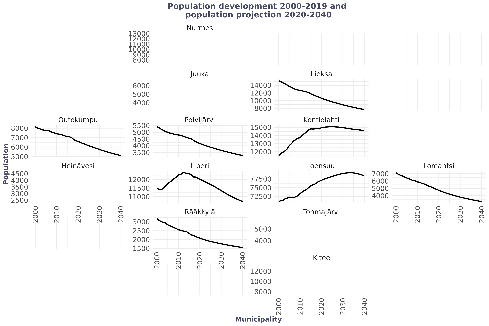
You can see, that facet_geo() is a geographic faceting method that arranges small ggplot panels to resemble a map, making regional comparisons easier while showing detailed plots for each area.
The figure does not render correctly, so below is an image showing the figure as it should look.
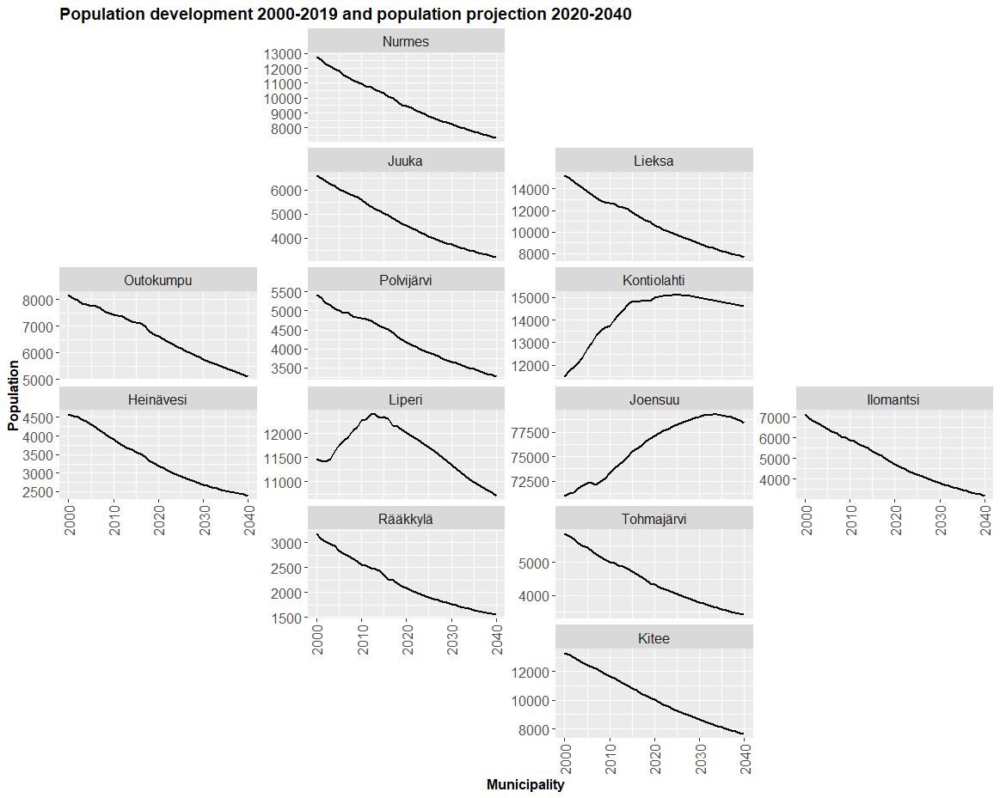
Step‑by‑step explanation
1. Defining the plot structure
ggplot(vs, aes(x = Group.1, y = x, group = Group.2))Explanation:
- vs is the dataset (Pohjois‑Karjala only)
- Group.1 → year
- x → aggregated population
- group = Group.2 → separate line for each municipality
2. Drawing population trends as lines
geom_line(size = 1.1)Explanation:
- Draws a continuous line for each municipality
- size = 1.1 increases line thickness for readability
3. Rotating x‑axis labels
theme(axis.text.x = element_text(angle = 90, vjust = 0.5, hjust = 1))Explanation:
- Rotates year labels by 90 degrees
- Prevents overlapping text
- Improves readability when many years are shown
4. Spatial faceting using geofacet
facet_geo(
facets = ~ Group.2,
grid = geofi::grid_pohjois_karjala,
scales = "free_y"
)Explanation (this is the key idea):
- Creates one panel per municipality
- Panels are arranged geographically, not alphabetically
- geofi::grid_pohjois_karjala defines the spatial layout
- scales = “free_y” gives each municipality its own y‑axis range
5. Adding labels and title
labs(
title = "Population development 2000–2019 and population projection 2020–2040",
y = "Population",
x = "Municipality")Explanation:
- Adds an informative title
- Labels axes clearly
- Essential for standalone interpretation
6. Improving visual appearance
theme(
axis.text = element_text(size = 12),
axis.title = element_text(size = 12, face = "bold"),
plot.title = element_text(size = 14, face = "bold"),
strip.text = element_text(size = 12)
)Explanation:
- Increases font sizes
- Makes titles and axes clearer
- Improves readability for lectures and reports
7. Controlling x‑axis year breaks
scale_x_continuous(breaks = seq(2000, 2040, 5))Explanation:
- Shows year labels every 5 years
- Avoids clutter
- Makes long time series easier to read